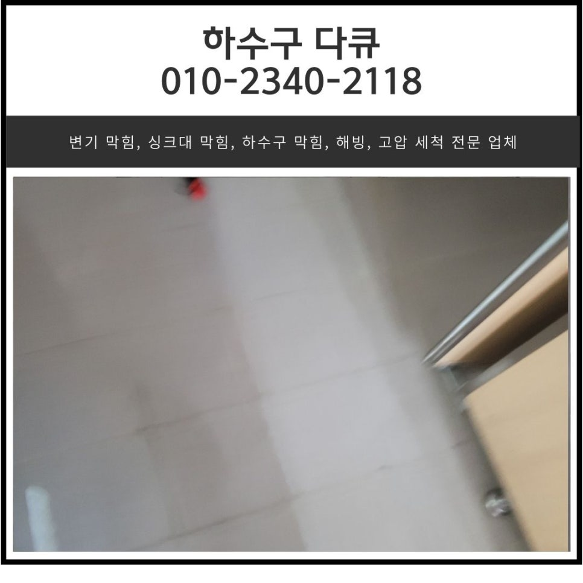
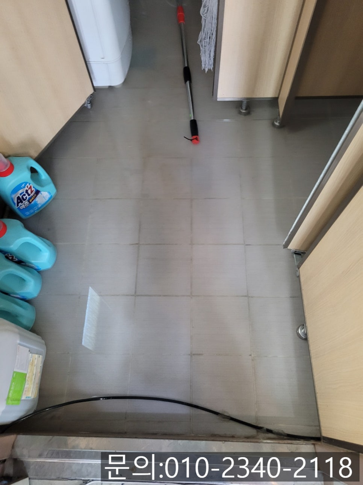
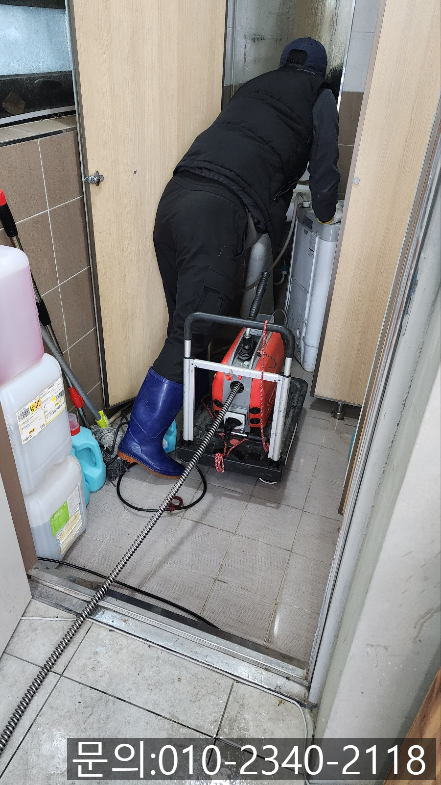
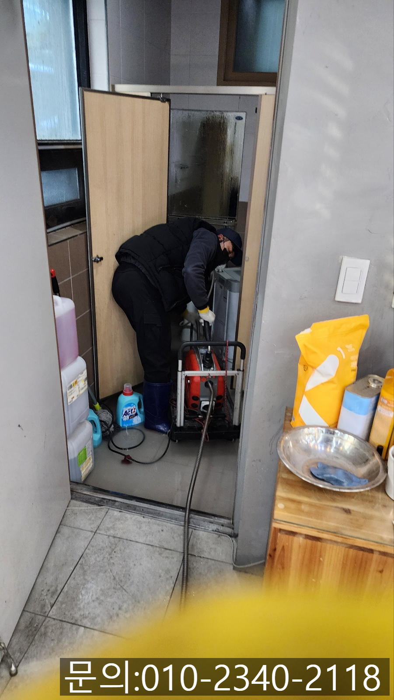
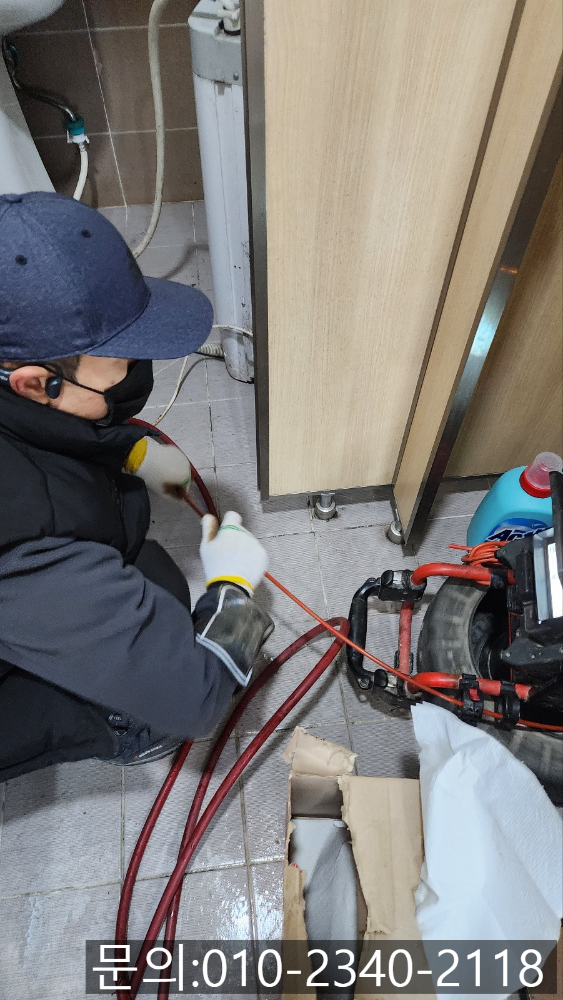
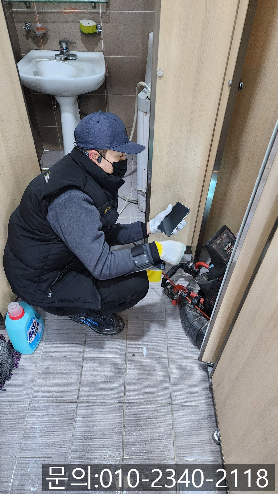
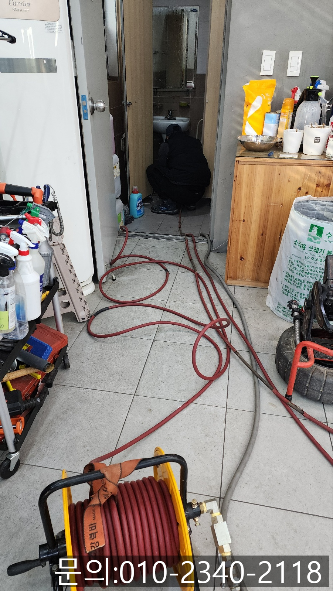

🏠 금암동 상가 화장실 역류 오산 수청동 하수구 막힘 고압세척으로 해결
오산 수청동 싱크대막힘 전문 시공 후기

📋 작업 개요
- 위치: 오산 수청동, 수청동, 오산
- 서비스 유형: 싱크대막힘, 변기막힘, 하수구막힘, 배관막힘, 역류해결, 뚫는업체, 배관청소, 고압세척
- 작업 일시: 2025. 2. 11. 9:20
- 업체명: 하수구수사대 (010-5615-2118)
🔍 문제 상황
안녕하세요.
금암동 상가 화장실 역류, 오산 수청동 하수구 막힘 고압세척으로 해결해 드리는 하수구 다큐입니다.
음식점에서 외식을 하거나 커피를 마시기 위해 카페에 방문하시다 보면 한두 번씩 화장실을 이용하시는 경우가 있으실 거예요.
상가 건물의 화장실을 이용하는데 세면대, 변기, 바닥에 있는 하수구가 막혀 악취와 함께 불쾌했던 경험 많이 있으실 겁니다.
매장의 화장실이 더러우면 매장의 이미지도 같이 나빠지기 마련인데요.
그러다 보니 매장을 운영하시는 사장님들도 화장실을 특별히 신경 써서 관리하실 겁니다.
하지만 불특정 다수의 손님들이 사용하는 화장실은 자주 막힐 수밖에 없는데요.
오늘은 금암동 상가 화장실 역류 현장을 소개해 드리면서 하수구 다큐가 어떻게 해결하는지 보여드리겠습니다.

🔎 원인 분석
💡 전문가 진단: 정밀 진단 장비를 사용하여 슬러지의 고착 여부를 판명하고 타격/세척 작업을 실시했습니다.
오래된 상가에서 식당을 하고 계신 고객님께 금암동 상가 화장실 역류가 발생했다는 연락을 받았습니다.
손님들이 화장실을 전혀 사용할 수 없을 정도로 바닥에 역류한 상태라 빨리 와서 뚫어달라고 요청하셨어요.
전화를 끊고 말씀해 주신 주소로 30분 만에 달려가 보니 말씀해 주신 것처럼 화장실 바닥에 물이 고여있는 상태였습니다.
화장실을 전혀 이용할 수 없는 상태였는데요.
금암동 상가 화장실 역류가 빨리 해결되지 않으면 자칫 매출 하락으로 이어질 수 있다 보니 신속하게 장비를 챙겨 작업을 시작했습니다.
우선 손님들이 화장실을 이용하실 수 있게끔 바닥에 역류한 물을 빼줘야 하다 보니 전동 스프링을 사용해 통수 작업을 진행했습니다.
전동 스프링의 경우 힘이 좋아 배관 내부에 많은 양의 이물질이 쌓여 있더라도 구멍을 뚫어 통수를 시켜주는 장비에요.
전동 스프링을 이용해 통수를 시킨 다음 배관 전용 내시경 카메라를 진입시켜 내부를 확인해 보니 기름 슬러지와 흙 등 많은 양의 이물질이 배관을 가득 메우고 있는 상태였어요.

🔧 작업 과정
고객님께 배관의 상태를 안내해 드린 다음 배관 청소를 진행하기로 했습니다.
워낙 오래된 건물이다 보니 배관에 기름 슬러지가 쌓이고 딱딱하게 굳어있는 상태였고, 배관의 크기도 크다 보니 고압세척을 진행하기로 했습니다.
고압세척은 차량에 설치되어 있는 물탱크에 많은 양의 물을 준비한 다음 짧은 시간에 물을 한꺼번에 쏟아내 배관을 막고 있는 이물질을 밀어내는 방식으로 배관을 청소하게 되는데요.
노즐이 배관에 진입하면서 강한 압력으로 물을 뿌려주면서 이물질을 바깥으로 내보내는 방식입니다.
싱크대 배관 청소에 자주 사용되는 플렉스 샤프트도 이물질 제거에 탁월하지만 배관의 길이가 길고 사이즈가 클 경우에는 고압세척만큼 효과적인 장비가 아직은 없는 것 같아요.
화장실에서 고압세척 작업을 진행했지만 건물 바깥쪽에 위치한 배관 청소는 제대로 되지 않는 것을 확인하고 외부로 나가 반대 방향에서 고압세척을 추가로 진행하기로 합니다.
요즘 눈도 많이 오고 날씨가 많이 춥다 보니 작업이 쉽지는 않았는데요.
오산 수청동 하수구 막힘을 믿고 맡겨주신 만큼 기름 슬러지를 완벽하게 제거하기 위해 작업을 진행했어요.
파이프로 장비가 진입할 수 있도록 길을 만들어 준 다음 내시경 카메라로 꼼꼼히 확인하고 있는 모습이에요.
배관 내부의 경우 사람의 눈으로 직접 확인할 수 없다 보니 꼭 내시경 카메라로 확인한 후 작업을 진행하고 있습니다.
배관 내부를 직접 확인해야 작업 방법도 결정되기 때문에 설비 업체를 선정하실 때는 꼭 내시경 카메라를 구비한 업체를 찾으시는 게 중요해요.
내시경 카메라를 이용해 배관 내부를 꼼꼼하게 확인하며 고압세척을 진행하자 깨끗해진 배관의 내부를 확인할 수 있었습니다.


✅ 작업 완료
화장실에서 외부로 연결된 배관까지 잔여 이물질은 없는지 점검해 드리고, 화장실에서 물을 사용해도 아무런 문제가 없는 것까지 테스트를 진행한 다음 작업을 마칠 수 있었어요.
상가 화장실의 경우 신발을 신고 들어가다 보니 흙이나 각종 이물질이 배관으로 들어가기 쉬운 만큼 자주 막힐 수밖에 없는데요.
그럴 땐 고민하지 마시고 하수구 다큐와 함께 해결해 보세요.
경기도 오산시 오산로160번길 15 201-L16호




⚠️ 주방 싱크대 배관 막힘 예방 수칙
- ✅ 기름기가 묻은 식기나 프라이팬은 설거지 전 키친타올로 반드시 기름때를 닦아내세요.
- ✅ 주기적으로 싱크대 개수대에 뜨거운 물을 가득 받아 한 번에 내려 배관 내부 기름을 씻어내세요.
- ✅ 배수구 거름망을 미세한 필터로 사용하시고 음식물 찌꺼기가 틈으로 새어 들지 않게 관리하세요.
- ✅ 베이킹소다와 식초를 뜨거운 물과 함께 일주일에 한 번씩 부어주면 배관 살균과 막힘 예방에 좋습니다.
💡 핵심 정리
- 확실한 장비 작업(내시경 점검 및 샤프트 스케일링)으로 원인을 뿌리 뽑습니다.
- 작업 후 1년 이내에 동일한 부위 재발 시 100% 무상 A/S 서비스를 보장합니다.
- 서울 · 경기 · 인천 전 지역에 24시간 언제든 긴급 출동할 수 있도록 항시 대기 중입니다.
❓ 자주 묻는 질문 (FAQ)
🚨 오산 수청동 싱크대막힘 문제로 고민이신가요?
정확한 원인 진단과 확실한 시공으로 재발 없는 해결을 약속드립니다.
24시간 긴급 출동 | 서울 · 경기 · 인천 전지역 | 1년 내 재발 시 무상 A/S